CHAPTER 9
Ferron and Aetheria
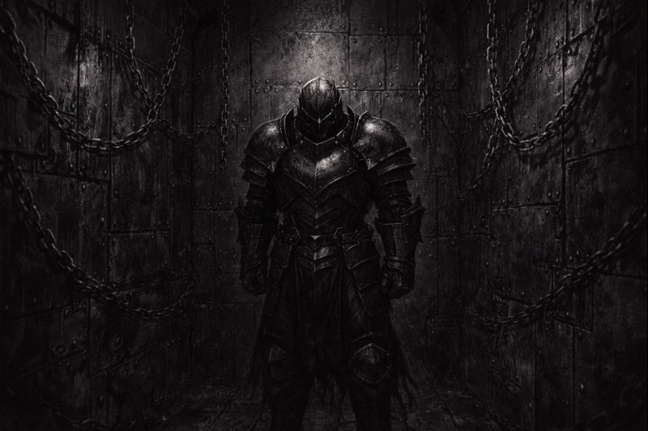
Iron enclosed the chamber completely.
No horizon. No distance. No escape.
King Ferron stood within it all — unmoving,
armored not just in steel,
but in certainty hardened over ages.
Order was not something he enforced.
It was something he became.
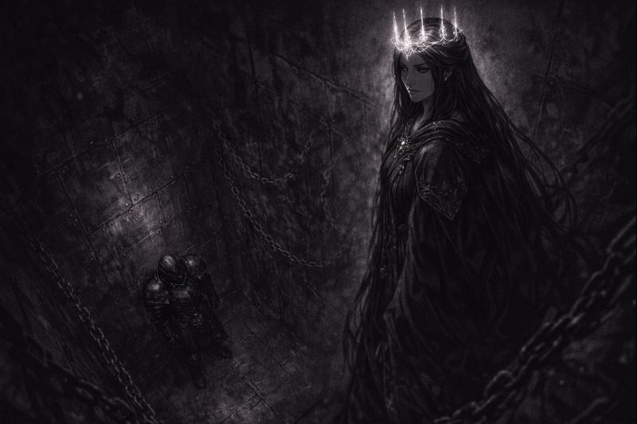
Queen Aetheria did not enter the cage.
She stood beyond it — calm, distant,
her presence light, her gaze unyielding.
“You call this strength,” she said softly.
“But strength does not require confinement.”
“You are not ruling iron, Ferron.”
“You are hiding inside it.”
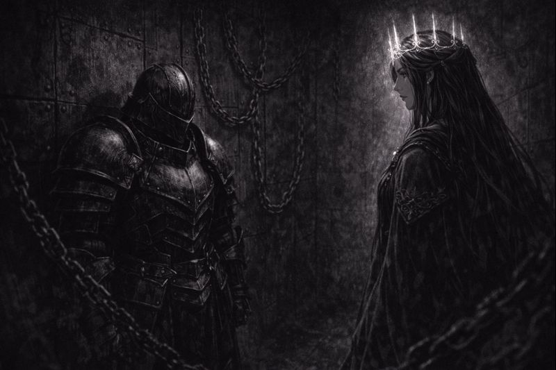
Ferron did not turn to face her.
His voice came steady — rehearsed by centuries.
“Iron does not doubt,” he replied.
“It does not hesitate. It does not fracture.”
“The world endures because something remains firm.”
“Because something refuses to bend.”
“Because something must hold.”
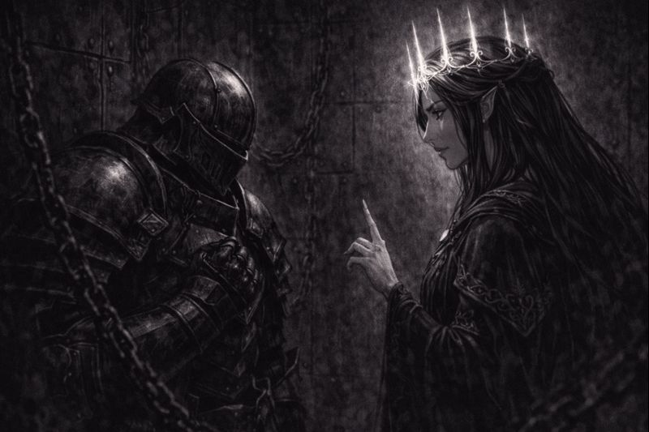
Aetheria’s gaze sharpened — not with anger,
but with clarity that cut deeper than force.
“Nothing that refuses to bend survives unchanged,” she said.
“Rigidity is not resilience.”
“It is fear disguised as discipline.”
“And fear always finds a way inside.”
“Even through iron.”
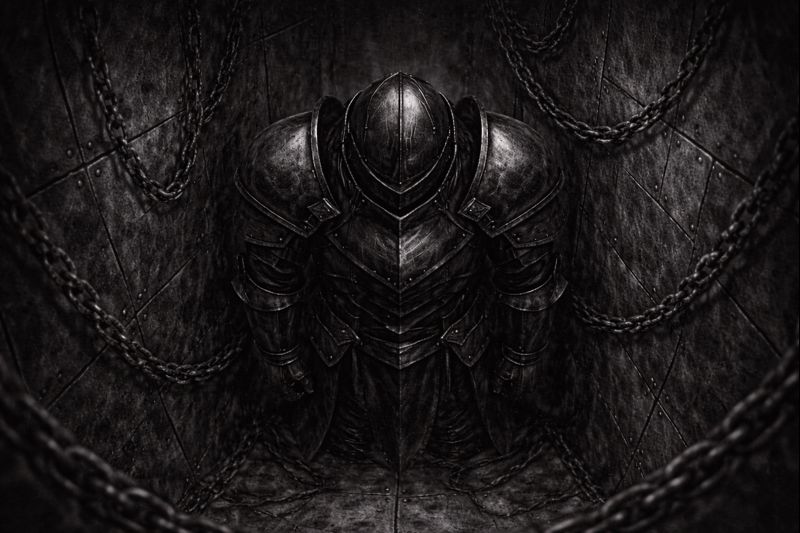
Ferron did not answer.
The iron thickened. The chains pulled tighter.
He sealed himself further —
not to block her voice,
but to silence the thought it awakened.
Doubt was not an enemy.
It was an infection.
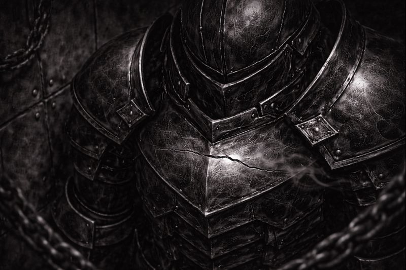
The crack appeared without sound.
A hairline fracture — precise, delicate, undeniable.
Reality itself seemed to question the armor.
To test its claim of permanence.
Ferron did not see it yet.
But the world did.
And it remembered.
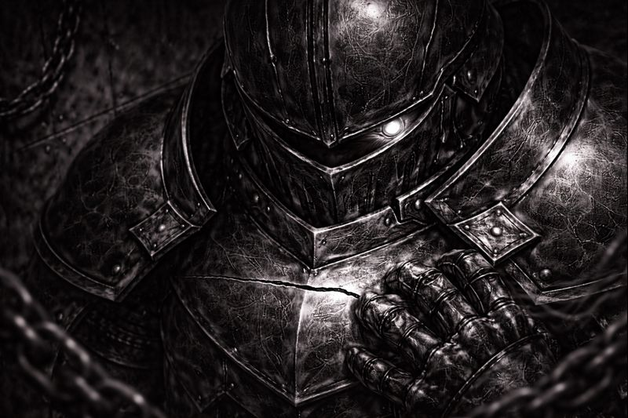
Ferron’s gaze dropped.
The fracture stared back at him — silent, accusing.
“Impossible,” he muttered.
“Iron does not fail.”
He clenched his fists.
Not in pain —
but in refusal.
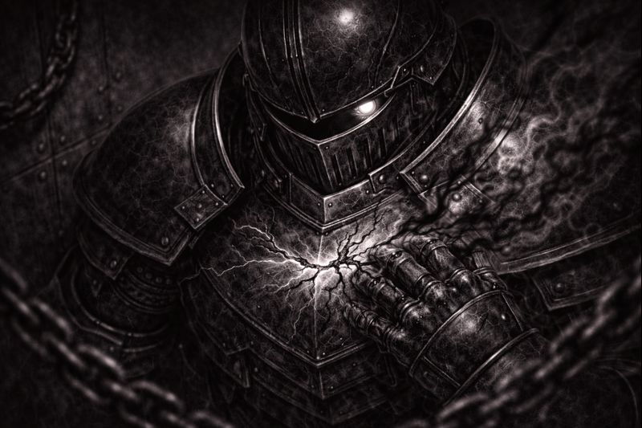
Aetheria stepped back.
Her voice softened — almost mournful.
“You could listen,” she said.
“You could change.”
“But you will not.”
“You will choose certainty.”
“Even if it poisons you.”
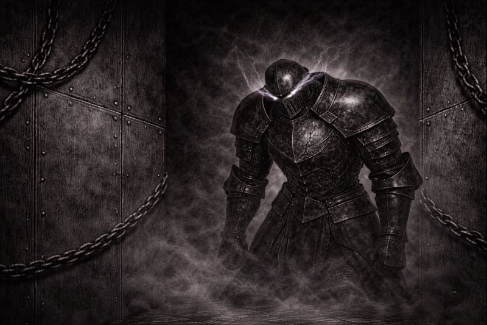
Ferron straightened.
He forced the armor closed — seam by seam.
The fracture vanished.
Control returned.
From his eyes, a thin corruption seeped — unseen by him.
Resolve twisted into something darker.
Something final.
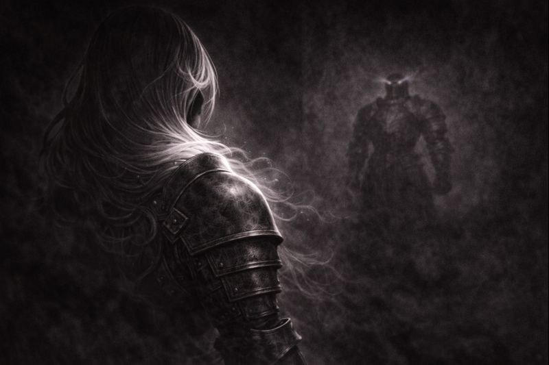
The chamber fell silent.
Chains stilled. Walls obeyed.
Ferron stood victorious —
unbroken,
unquestioned,
unchanged.
That was the lie he accepted.
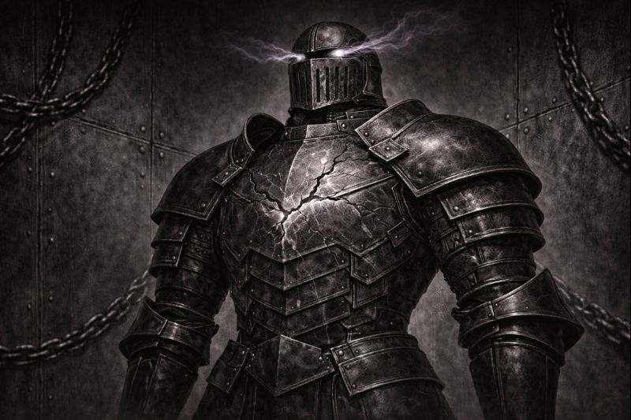
Aetheria was gone.
Not defeated — dismissed.
The iron felt heavier now.
Less like armor.
More like a sentence.
Ferron remained still.
Certain.
Alone.
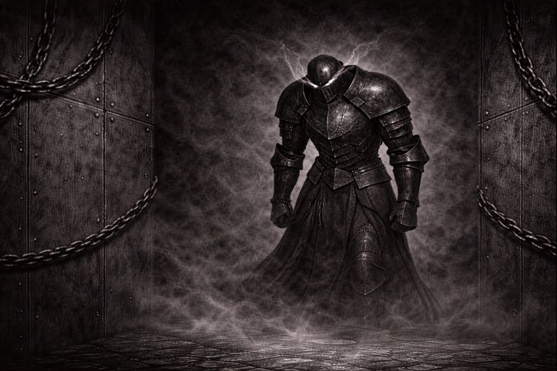
The fracture did not disappear.
It was merely buried.
Somewhere beyond the cage,
something listened.
Corruption does not announce itself.
It waits.
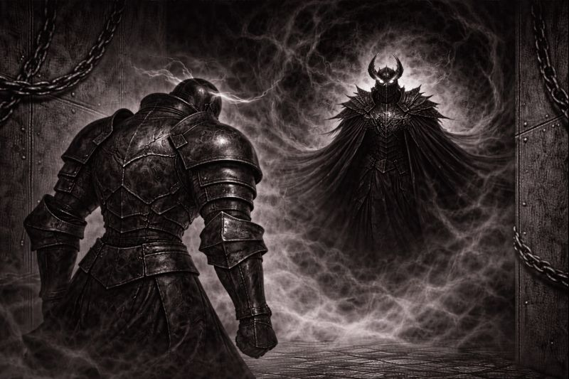
From the edge of existence,
Nihilus observed — unmoving, unseen.
“He chose certainty,” the void whispered.
“As they all do.”
“Iron that never bends will shatter.”
“And when it does…”
“I will be there to collect what remains.”
✦ ✦ ✦